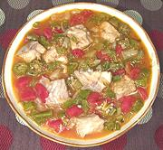

|
Catfish GumboUSA - Louisiana - | ||||
| Serves: Effort: Sched: DoAhead: |
4 ** 1-1/4 hrs Yes |
Delicious, traditional and easy to make. Gumbos are stews combining French, Spanish, African and other influences. With tomatoes (an Italian influence) this is clearly a Creole gumbo. | |||
|
1 5 5 5 2 8 14 2 2 ----- 1/2 1/4 1/4 1/2 1/4 ----- |
# oz oz oz cl oz oz T c --- t t t t t --- |
Catfish (1) Onions Celery Bell Pepper Garlic Okra fresh (2) can Tomatoes, diced Oil Stock (3) -- Seasonings Chili flakes (4) Oregano dry Thyme dry Salt Pepper --------- |
Prep - (25 min)
|